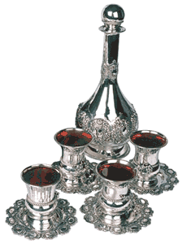

Four Cups
Since the wine (being rich in taste) celebrates the climax of the exodus, when the Jewish people merited the Torah after weeks of personal effort, consequently, only the mitzva of drinking wine could be associated with all four expressions of redemption.

The four cups of wine drunk on seider night
a) Definition
b) Halachic reason for four cups
c) Reason why the four cups is of Rabbinic origin
d) The requirement of leaning while drinking the four cups
i) Statements of the Rambam
ii) Two approaches to leaning
iii) Arguments in favor of each approach
iv) Conclusion
v) Ruling of the Alter Rebbe
a) Definition
On the first night of Pesach (and the second night in the Diaspora) there is a mitzva of Rabbinic origin to drink four cups of wine. The Jerusalem Talmud (Pesachim 10:1) cites many reasons for the mitzva of drinking four cups of wine: The four cups correspond to:
1) the four expressions of redemption in Parshas VaEira (“I took out,” “I saved,” “I redeemed,” and “I took”).
2) the four times that Pharaoh’s cup is mentioned in the Torah.
3) the four exiles.
4) the four cups of retribution that G-d will pour upon the nations of the world.
In the Alter Rebbe’s Shulchan Aruch (Orach Chaim 472:14) only the first reason is given.
b) Halachic reason for four cups
The exodus from Egypt occurred so that the Jewish people could receive the Torah at Mt. Sinai. After leaving Egypt, the Jewish people worked on themselves for seven weeks to rid themselves of the idolatrous nature to which they had become accustomed in Egypt, so as to reach a sufficiently pure status to be able to receive the Torah.
The mitzva of matza, a tasteless food, represents the exodus from Egypt, for at that point the Jewish people had not yet worked on themselves to become close to G-d, so their Divine service was “tasteless.” Wine, on the other hand, is a rich and strong in taste, corresponding to the state of the Jewish people after they worked on themselves and were ready to receive the Torah seven weeks later.
This explains why there are four cups of wine, corresponding to the four expressions of redemption (see above, that this is the reason accepted by Jewish Law).
The last of the four expressions is “I took them for Me as a people,” which became applicable only when the Torah was given. And it is precisely this point that the four cups of wine commemorate, since the wine (being rich in taste) celebrates the climax of the exodus, when the Jewish people merited the Torah after weeks of personal effort. Consequently, only the mitzva of drinking wine could be associated with all four expressions of redemption.
[At the moment of exodus only three of the four expressions of redemption were applicable (which explains why there are only three matzos place on the table during the seider).]
Thus, the point of drinking the four cups of wine is to celebrate the ultimate purpose of the exodus of Egypt at the same time we celebrate the exodus itself.
(Based on Likkutei Sichos 26:46-49)
c) Reason why the four cups is of Rabbinic origin
We celebrate the beginning of the exodus by eating matza, which is a Biblical requirement, whereas the perfection and completion of the redemption process is celebrated by the four cups of wine, which is a Rabbinic mitzva (see above ‘b’).
The inner reason for this difference is as follows:
The Written Law (Scripture) is compared to a man (masculine), being the source of all Jewish law, just as the man is the ultimate source of a child. The Oral Law, on the other hand, is compared to a woman (feminine), since it analyzes scriptural sources and develops them at length, just as a mother gestates a child within her over a long period of time.
Thus, matza, which celebrates the sudden and raw inception of redemption, is a mitzva derived from the Written Law (masculine). The nurturing development of the redemptive process to its completion is celebrated by the four cups of wine, a mitzva from the Oral Law (feminine). (Ibid.)
d) The requirement of leaning while drinking the four cups
i) Statements of the Rambam
When recording the obligation to lean on seider night, the Rambam seems to repeat himself unnecessarily. In chapter seven of Hilchos Chametz U’Matza (laws 6-7), he writes: “In every generation a person is obligated to make himself appear as if he has personally been redeemed from Egypt… Therefore, when a person dines on this night, he must lean while eating and drinking in a manner of freedom…”
Later, in law eight, after discussing who is required to lean, and codifying the mitzva of drinking four cups of wine, the Rambam adds: “When is one required to lean? When eating the [obligatory] ke’zayis of matza and when drinking these four cups of wine.”
Why does the Rambam not tell us when to lean when he introduces the idea in laws 6-7? Only after hearing many other laws do we eventually discover when the mitzva of leaning takes place. Initially, the Rambam makes a vague statement: “When a person dines on this night, he must lean.” Only later do we discover that this actually refers to the act of eating matza and wine.
It would seem, therefore, that by recording the mitzva of leaning twice, with slight changes, the Rambam is teaching us that there are two distinct, quite different aspects to our leaning.
ii) Two approaches to leaning
Basically, we are only informed of one fact: It is a mitzva to lean while eating the obligatory matza and drinking the four cups of wine. We are not, however, told the nature of the mitzva of leaning, which could be understood in two ways:
a) Leaning is a clause in the mitzvos of matza and wine. It is not a separate mitzva unto itself, but rather, a condition superimposed by our Sages on other mitzvos. In a similar way that we find defined limits on how much wine one has to drink and what type of wine it must be, we also find a crucial directive in halacha concerning how the wine must be consumed - whilst leaning.
Alternatively:
b) Leaning is a separate mitzva unto itself instituted by our Sages in order to make the Jewish people demonstrate outward signs of freedom on seider night. However, our Sages only required that we lean while we are already performing acts associated with freedom. Thus, they only commanded that we lean when eating the obligatory measure of matza and drinking the four cups of wine.
iii) Arguments in favor of each approach
One answer could be argued on the basis of the Rambam’s statement (ibid) that “It is praiseworthy to lean also during the rest of one’s eating and drinking.” This seems to imply that leaning is a mitzva in itself. If leaning were merely a clause in the eating of matza and drinking of wine (i.e. approach “b”), why would it be praiseworthy to lean at any other time?
However, this argument is untenable, since even if one would follow approach “a” (that leaning is only a clause in other mitzvos) one could still argue that “It is praiseworthy to lean also during the rest of one’s eating and drinking.” This is because “the rest of one’s eating and drinking” on Yom Tov is also a mitzva, and therefore it is conceivable that our Sages recommended leaning during this mitzva, as well. However, they did not make it compulsory, but rather, “praiseworthy.”
A second suggestion would be to argue that approach “a” must be correct since, according to approach “b,” it turns out that eating matza, which is a Biblical command, is actually a clause in the Rabbinic mitzva of leaning?! A Biblical mitzva could never become merely the means to fulfilling a Rabbinic precept. Therefore, it would seem that approach “a” is correct - that (Rabbinic) leaning is a mere clause in the (Biblical) consumption of matza.
However, this answer also fall short, since there was never a suggestion that the Biblical command to eat matza is a mere clause in the Rabbinic requirement to lean. Rather, our Sages enacted a mitzva to lean on seider night (to demonstrate freedom), which in principle could have been carried out at any point, totally independent of eating matza or wine. It is only that the perceived optimal moment to display freedom through leaning is when one is already performing an act, which symbolizes freedom. Therefore, they limited the mitzva to the time of eating matza and drinking wine. We seem to be left without conclusive evidence in either direction.
However, from the Gemara it does seem clear that approach “a” (that leaning is a clause in the eating of matza) is correct. The Gemara (Pesachim 108a) states, “A shamesh who eats a ke’zayis of matza while leaning fulfills his obligation. If he leans, he does fulfill his obligation; if not, he doesn’t.” Clearly, the words “if not, he doesn’t” refer to not fulfilling the mitzva of eating matza - not the mitzva of leaning. (If a person does not lean he obviously doesn’t fulfill the mitzva of leaning.) It seems that leaning is a mere clause in the mitzva of eating matza - approach “a.”
Nevertheless, from the statement of the Rambam that “In every generation a person is obligated to make himself appear as if he has personally been redeemed from Egypt,” it seems clear that leaning is a separate obligation, not merely a clause in something else - approach “b.”
iv) Conclusion
Therefore we conclude that both are true. When our Sages instituted leaning, they made it both: a) a clause in other mitzvos, and b) A separate mitzva unto itself. Thus, the Rambam found it necessary to record the halacha twice, each time emphasizing a different aspect of leaning. First he writes that “A person is obligated to make himself appear as if he has personally been redeemed from Egypt… Therefore…he must lean while eating and drinking,” to indicate that leaning is a mitzva in itself. Then, in a later halacha, he writes, “When is one required to lean? When eating the [obligatory] ke’zayis of matza and when drinking these four cups of wine,” thereby indicating that he also holds that leaning is a crucial clause in other mitzvos.
v) Ruling of the Alter Rebbe
In an identical fashion to the Rambam, the Alter Rebbe also records the requirement to lean twice (in his Shulchan Aruch, Orach Chaim 472:7,14), stressing the same distinction between them. This implies that he agrees with the Rambam’s stance that the halacha requires leaning according to both approaches mentioned above. However, the Alter Rebbe also adds the explanation that the four cups of wine correspond to the four expressions of redemption employed by the Torah (see above “a”, that this is only one of a number of reasons given by the Jerusalem Talmud). It follows, therefore, that this reason (the four expressions of redemption) is also crucial to the Rambam’s position.
In brief: If one holds that leaning follows approach “b” above (that it is a separate mitzva in itself), then any of the four reasons of the Jerusalem Talmud’s four reasons are appropriate. However, if one also wishes to adopt approach “a” (that leaning is a clause in other mitzvos), then it is crucial that the reason for leaning be compatible with the reason for which the other mitzvos are performed. Since the two mitzvos of matza and wine denote freedom and redemption, for leaning to be a clause in these mitzvos, it too must have the same theme. Thus, the Alter Rebbe rules that only the first reason of the Jerusalem Talmud is applicable - that the four cups of wine correspond to the four expressions of redemption in Parshas VaEira.
(Based on Likkutei Sichos, Vol. 11, pp. 14-23)
Rabbi Chaim Miller. "Four Cups." Beis Moshiach, no. 319 (April 6, 2001).